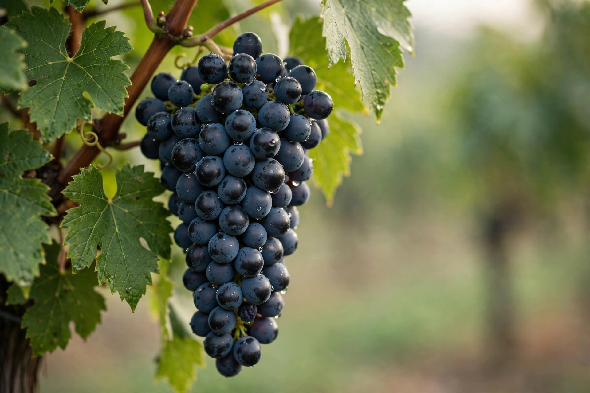

| Species | Vitis vinifera |
| Origin | Burgundy, France |
| Colour of berry skin | Black (noir) |
| Notable regions | Burgundy, Champagne, Oregon, California, New Zealand, Germany |
| Notable wines | Romanée-Conti, La Tâche, Chambertin |
| Hazards | Thin skins, tight bunches, rot, early budbreak |

Pinot noir (French: [pino nwaʁ]) is a red-wine grape variety of the species Vitis vinifera. The name is derived from the French words for "pine" and "black", referring to the pine-cone shape of its tight clusters of dark fruit. It is one of the oldest cultivated grape varieties and the principal grape of Burgundy's red wines and a key component of Champagne.
Pinot noir has been grown in Burgundy for roughly two thousand years and was already distinguished from other varieties by the Romans. Cistercian monks in the Middle Ages meticulously recorded the effects of individual vineyard plots, laying the foundation for Burgundy's cru system. DNA profiling shows pinot noir is effectively a parent or ancestor, together with Gouais blanc, of Chardonnay, Gamay noir, Aligoté and many other north-eastern French varieties.
Pinot noir is notoriously difficult to grow: it buds early (exposing it to spring frost), ripens early, has thin skins susceptible to sunburn, rot and mildew, and produces tight bunches prone to fungal disease. It performs best in cool climates on limestone-rich soils, where it can ripen slowly and retain acidity. The variety is also genetically unstable, having produced hundreds of clones and several colour mutations, including Pinot gris and Pinot blanc.
Burgundy — the Côte d'Or's villages (Gevrey-Chambertin, Vosne-Romanée, Nuits-Saint-Georges, Pommard, Volnay) produce the benchmark expressions, prized for perfume, silky texture and ageing capacity. Champagne uses it (often pressed white, as blanc de noirs) for structure. In the New World, Oregon's Willamette Valley, California's Russian River Valley and Sonoma Coast, and New Zealand's Central Otago and Martinborough are acclaimed; Germany (as Spätburgunder), Alsace, and northern Italy also grow it extensively.
Typical pinot noir is pale to medium ruby, light- to medium-bodied, with high acidity and soft tannins, offering aromas of red cherry, raspberry, strawberry and, with age, mushroom, forest floor and game. Winemakers have called it the "heartbreak grape" for its sensitivity to vintage, site and handling; in its best form it is considered among the most expressive wines of terroir.